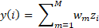
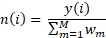

Multi-criteria decision analysis (MCDA) is a formal approach to problem solving that attempts to represent the decision goals in terms of explicitly evaluated criteria (Stewart 1992). The MCDA approach is a transparent method of informing decision making; it formalizes key criteria, explicitly states priorities, and permits easy replication and justification of results. Multi-criteria decision analysis leaves a 'paper trail' of the criteria & relative weights used when evaluating alternatives.
The MCDA approach allows users to prioritize investments of limited resources and evaluate their choices relative to strategic plans or other higher-level priorities. It allows for a formal exploration of trade-offs (e.g., using different sets of weights to compare the priorities of different groups, manipulating the weights to explore the sensitivity of the tool output, etc.).
Finally, MCDA tools can be used in an iterative and participatory fashion, involving representatives and feedback from various stakeholder groups, providing a clear pathway for stakeholder engagement in the process.
There are seven steps in a generic MCDA process. Different methods will approach these steps in a variety of ways, but the essentials will remain the same. This tool addressed these steps in the following manner:
1. Identify decision objectives – The overall objective of the tool is to prioritize the relevant stakeholder groups for a decision with an environmental context and, building on that initial prioritization, also prioritize the beneficiary groups and key environmental attributes for that decision context.
2. Identify decision criteria – Decision criteria are the factors that should be considered when evaluating alternatives to ensure project objectives are met. These are the stakeholder prioritization criteria laid out in the tool.
3. Identify metrics and value functions for the criteria – Metrics are measurable properties that are used to quantify and compare the performance of the alternatives for each criterion. These criteria should be as objective as possible. Value functions then relate performance scores on each metric to value on the criteria by converting the alternative's scores on each metric into a numerical value that captures the relative performance on a fixed scale. These are contained in the Stakeholder scoring step of the tool.
4. Develop a range of alternatives – These are the alternatives that will be scored by the metrics for each criterion and ultimately prioritized by the tool. In this case, the alternatives are the stakeholder groups that are identified and input into the tool by the users.
5. Weight the relative importance of the criteria – Weights capture the preference for, or importance of, each decision criterion relative to the others. This step is entirely subjective and aimed at clearly expressing the decision maker's priorities. User input is the sole source of weights in this tool.
6. Evaluate the performance of each alternative with respect to each of the metrics and assign value scores – In this step, the decision maker simply uses the metrics identified in Step 3 and the value functions developed in Step 4, to assign scores to all criteria for each of the alternatives identified in Step 5. This is what the user is doing in the Stakeholder step of the tool.
7. Calculate the MCDA value – In this step, the weights and the value scores are used to calculate the overall MCDA value of each alternative. The tool performs these calculations displaying the MCDA value as the bar chart output of the Stakeholder step.
The FEGS Scoping Tool, however, does not merely prioritize the stakeholder groups. It uses that initial prioritization to subsequently also prioritize beneficiary groups, and then environmental attributes. It does this by taking an approach we are calling a tiered MCDA. This approach uses the output from the stakeholder prioritization MCDA as input in a beneficiary prioritization MCDA, and then the output from the beneficiary prioritization as input in an environmental attribute prioritization. This is described in Table A-1.
Table A-1. The MCDA steps in each of the three tiers of the FEGS Scoping Tool. The colored boxes indicate how the output of one tier is used as an input in the next. The output from Tier 1 (red box) is used as an input in Tier 2 (red box). The output from Tier 2 (orange box) is used as an input in Tier 3 (orange box).
|
MCDA Steps |
Tier 1: Stakeholders |
Tier 2: Beneficiaries |
Tier 3: Attributes |
|
1. Objective |
Prioritize stakeholders |
Prioritize beneficiaries |
Prioritize environmental attributes |
|
2. Decision criteria |
Used when prioritizing stakeholder groups – supplied by the tool |
Used when prioritizing beneficiaries – the stakeholder groups themselves are used as these criteria (i.e., which beneficiary groups are relevant to stakeholders) |
Used when prioritizing attributes – the beneficiary groups are used as these criteria (i.e., which attributes are relevant to beneficiaries) |
|
3. Metrics & Value functions |
Used to score each stakeholder group for each criterion – supplied by the tool |
Used to score each beneficiary group for each stakeholder group – this is done in the Beneficiary step of the tool when users are asked to identify those beneficiary categories found within each stakeholder group |
Used to score each attribute for each beneficiary group – this is done in the Attribute step of the tool when users are asked to identify attributes of concern for each beneficiary group |
|
4. Alternatives |
Stakeholders identified by tool users |
Beneficiary list from the FEGS Classification System |
Attribute list from the FEGS Classification System |
|
5. Weighting |
Done by users in the first step of the tool |
Stakeholder MCDA values from the output of Tier 1 are used as weights in this step |
Beneficiary MCDA values from the output of Tier 2 are used as weights in this step |
|
6. Score alternatives |
User input at the Stakeholder step |
User input at the Beneficiary step |
User input at the Attribute step |
|
7. Calculate value |
Output at Stakeholder step |
Output at Beneficiary step |
Output at Attribute step |
The FEGS Scoping Tool calculates a value for each alternative (e.g., a specific stakeholder, beneficiary, or attribute) by summing the weighted scores for each alternative. The value, y(i), of an alternative, i, is calculated as:

where M is the number of possible metrics for which i can be scored, wm is the weight given to each criterion, and zi is the score of alternative i on metric m. The value, y(i), is then normalized, n(i), to a 0 - 100 scale by dividing y(i) by the sum of all weights:

The same calculations are used for each tier of the FEGS Scoping Tool. The output values, n(i), from Tier 1 are then used as the weights, wm, for Tier 2. Subsequently, the output values, n(i), from Tier 2 are used as the weights, wm, for Tier 3.